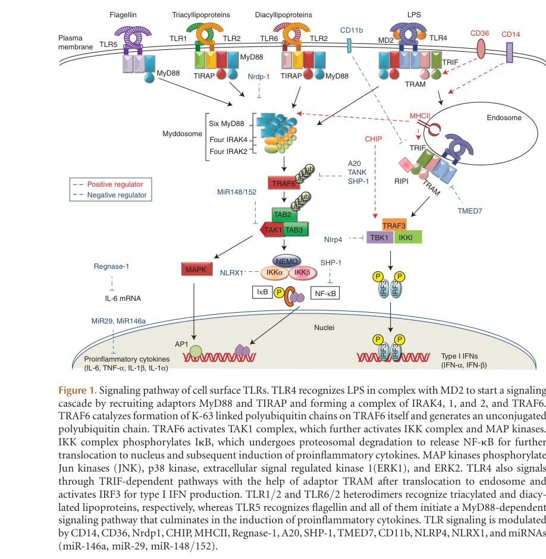

Toll-like receptor of the TLR11/TLR12 pair, found in rodents and in some other mammals including horses and lemurs but absent from the human genome. It has the canonical TLR architecture, a leucine-rich-repeat ectodomain, a single transmembrane segment and a cytoplasmic TIR domain, and behaves as an intracellular rather than a cell-surface receptor, being delivered to the endosomal/endolysosomal system by the trafficking chaperone UNC93B1 and engaging its ligand there at acidic pH. Its characterised ligand is profilin from apicomplexan parasites, notably Toxoplasma gondii, which the receptor ectodomain binds directly. The protein forms homodimers and also heterodimers with its close paralogue, and the pair acts together in dendritic cells and macrophages to drive IL-12 production in response to parasite profilin, with the paralogue supplying MyD88 recruitment. Downstream of the receptor pair the IL-12 response of dendritic cells was shown to require MyD88 and the transcription factor IRF8 and not to require NF-kappa-B1 or NF-kappa-B2, while a separate study reported NF-kappa-B activation in macrophages and plasmacytoid dendritic cells, so the transcriptional route is cell-type dependent. Through this route the receptor contributes to host resistance to Toxoplasma infection. The literature names of the two paralogues are interchanged relative to the MGI and UniProt gene symbols, so published work on "TLR12" refers to this protein.
| GO Term | Evidence | Action | Reason |
|---|---|---|---|
|
GO:0002224
toll-like receptor signaling pathway
|
IBA
GO_REF:0000033 |
ACCEPT |
Summary: The protein is a bona fide TLR that signals to IL-12 induction on ligand engagement, through MyD88 and IRF8, so the family-level pathway term is correct.
Reason: The PAINT node placement is sound: this is a TIR-domain LRR receptor acting in a MyD88/UNC93B1-dependent TLR cascade with its paralogue, demonstrated in dendritic cells and macrophages. GO also has numbered children for this pair (GO:0034170 toll-like receptor 11 signaling pathway, GO:0034174 toll-like receptor 12 signaling pathway), and one of them describes this gene product exactly, but the two terms are named after the receptors as the literature names them, and the literature names of Q6R5P0 and Q6QNU9 are interchanged relative to the MGI/UniProt symbols. Assigning a numbered child would assert a nomenclature resolution that GO and MGI have not made, so the unnumbered parent is kept and the question raised.
Supporting Evidence:
PMID:23246311
TLR11 and TLR12 act as obligate heterodimers to activate NF-κB and produce IL-12 in response to TgPRF
PMID:24078692
our study uncovered a MyD88 and IRF8-dependent but NF-κB independent pathway in DCs for the induction of IL-12
|
|
GO:0005515
protein binding
|
IPI
PMID:23101627 A mouse model of Salmonella typhi infection. |
UNDECIDED |
Summary: Bare protein binding recording an interaction with Salmonella flagellin FliC; uninformative as a molecular function, and the receptor assayed in the cited paper is most likely the paralogue.
Reason: Two separate problems. First, GO:0005515 carries no functional information; if the interaction stands it should be expressed as pattern recognition receptor activity rather than generic binding. Second, the cited paper reports flagellin binding by the receptor it calls TLR11, and on the sequence evidence the protein called TLR11 in this literature is Q6QNU9 (MGI Tlr12), not this entry. UniProt states that the nomenclature of the pair is routinely inverted, and independent cloning primers in two other papers place the TLR11 N-terminus (MGRYWLL) on Q6QNU9 and the TLR12 N-terminus (MPRMER) on Q6R5P0. IntAct nonetheless placed this interaction on Q6R5P0. Because this reviewer cannot see how the identity was assigned, and repository policy forbids overturning an experimental annotation on paralog-attribution grounds, it is left undecided for MGI and IntAct to resolve.
Supporting Evidence:
PMID:23101627
Flagellin binds TLR11 and induces innate responses in mice independent of TLR5.
PMID:24078692
AAGTCGACGCCACCATGCCCCGCATGGAGCG
|
|
GO:0005886
plasma membrane
|
IBA
GO_REF:0000033 |
MODIFY |
Summary: This receptor acts in endosomes, not at the plasma membrane; the inherited location comes from the surface-TLR donors of the PAINT node.
Reason: The donor set is dominated by cell-surface receptors (TLR1, TLR2, TLR4, TLR5, TLR6, Drosophila Toll), so the node transferred a property that is not conserved in this branch. Experimentally the receptor is guided to the endolysosomal system by UNC93B1 and engages profilin there at acidic pH, and the two studies that examined the pair directly concluded that both are endosomal TLRs. Endosome is proposed rather than a finer child because the published evidence distinguishes a resting ER pool from an activated endolysosomal pool without resolving a single compartment.
Propagation Review
Root cause:
PROPAGATION BAD
Failure modes:
COMPARTMENT OR COMPLEX MISMATCH
Sources checked:
PANTHER:PTN002808045
SUPPORTS SOURCE BUT NOT TARGET
Ancestral node placed on a set of donors that are cell-surface receptors (TLR1, TLR2, TLR4, TLR5, TLR6 and Drosophila Toll); the plasma-membrane location is sound for them and does not transfer to this UNC93B1-dependent intracellular branch.
Proposed replacements:
endosome
Supporting Evidence:
PMID:23290966
both TLR11 and TLR12 are endosomal TLRs and act as heterodimers in the recognition of Toxoplasma molecules
PMID:23246311
suggesting that TLR12 also is guided to the endolysosomal system by Unc-93B1
|
|
GO:0007165
signal transduction
|
IEA
GO_REF:0000002 |
KEEP AS NON CORE |
Summary: True but generic; the TIR-domain-to-GO mapping gives the top-level process of which the annotated TLR pathway is a descendant.
Reason: Correct, since the protein does transduce a signal, but uninformative next to GO:0002224, which is annotated on the same gene. Retained rather than removed because the InterPro mapping is sound for a TIR-domain protein.
|
|
GO:0009617
response to bacterium
|
IMP
PMID:15001781 A toll-like receptor that prevents infection by uropathogeni... |
UNDECIDED |
Summary: Mutant-phenotype annotation from the uropathogenic E. coli study, but both the cited paper's receptor and the allele in the WITH field belong to the paralogue on the available sequence evidence.
Reason: The knockout in the cited paper is allele MGI:3045751, which MGI records as Tlr12<tm1Gho> with the note that every reference identifies it as a Tlr11 allele while all associated sequence information indicates it is an allele of Tlr12; and UniProt cites PMID:15001781 under Q6QNU9 (Tlr12) for both FUNCTION and DISRUPTION PHENOTYPE, not under this entry. So the bacterium-response phenotype most likely belongs to the paralogue, and there is no independent evidence that Q6R5P0 itself responds to bacteria; its established ligand is apicomplexan profilin. This is not removed, because an experimental annotation should not be overturned on paralog-attribution grounds by a reviewer who cannot see the curator's full reasoning. It is flagged so that MGI and GO can resolve the pair's identity once and propagate the answer to both entries.
Supporting Evidence:
PMID:15001781
Cells expressing TLR11 fail to respond to known TLR ligands but instead respond
PMID:24078692
AAGTCGACGCCACCATGGGCCGCTACTGGCT
|
|
GO:0016020
membrane
|
IEA
GO_REF:0000044 |
KEEP AS NON CORE |
Summary: Correct at the generic level for a single-pass type I membrane protein.
Reason: True but uninformative; the informative location for this receptor is the endosome/endolysosome, proposed above as the replacement for the plasma-membrane row.
|
|
GO:0038023
signaling receptor activity
|
IBA
GO_REF:0000033 |
MODIFY |
Summary: The receptor binds a microbial molecular pattern (apicomplexan profilin) directly, so the specific pattern recognition receptor activity term applies.
Reason: GO:0038023 is correct but is the generic parent. Raetz et al. showed that both members of the pair interact directly with Toxoplasma profilin in a pH-dependent manner, which is exactly the combining with a pathogen-associated molecular pattern to initiate an innate immune response that GO:0038187 defines. GO:0038187 is also the conventional MF for characterised TLRs (human TLR2, TLR5 and TLR9 each carry it by IDA), so this brings the entry into line with the family. The recognition claim does not depend on which paralogue carries which literature name, because both were assayed side by side in the same experiments.
Propagation Review
Root cause:
TERM SCOPING PROBLEM
Failure modes:
GRANULARITY MISMATCH
Sources checked:
PANTHER:PTN002808045
SUPPORTS TRANSFER
The node assertion is correct; it is simply the generic parent, and direct profilin binding by this receptor supports the specific pattern recognition receptor activity child.
Proposed replacements:
pattern recognition receptor activity
Supporting Evidence:
PMID:24078692
Additionally, both TLR11 and TLR12 are not only capable of forming a heterodimeric complex but also directly interacts with T
PMID:23246311
TLR11 and TLR12 act as obligate heterodimers to activate NF-κB and produce IL-12 in response to TgPRF
|
|
GO:0051707
response to other organism
|
IEA
GO_REF:0000117 |
KEEP AS NON CORE |
Summary: Correct at a very general level; the specific response is to a protozoan parasite.
Reason: The ARBA model's claim is true, in that the receptor functions in the response to another organism, but the informative term is the proposed GO:0042832 defense response to protozoan, a descendant of this one.
|
|
GO:0042832
defense response to protozoan
|
IMP
PMID:23246311 Recognition of profilin by Toll-like receptor 12 is critical... |
NEW |
Summary: Loss of this receptor impairs IL-12 production and host resistance to Toxoplasma gondii, the response that its profilin-recognition activity initiates.
Reason: Q6R5P0 is the receptor called TLR12 in the Koblansky and Raetz papers (the cloned open reading frame is NP_991388, this entry's RefSeq, with this entry's 30-residue signal peptide), and those papers show that its loss abolishes the IL-12 response of dendritic cells and macrophages to Toxoplasma profilin and reduces host resistance to the parasite. Participation is direct rather than permissive: the receptor ectodomain binds the profilin PAMP itself and dimerisation of the receptor pair is the step that initiates the downstream cascade, so this gene product performs recognition work within the process. The comparator check supports the proposal rather than undermining it: the paralogue Q6QNU9 already carries GO:0042832 by IMP from the mirror-image paper on the same parasite, and characterised TLRs are routinely annotated to the defense-response term for the class of pathogen they sense.
Supporting Evidence:
PMID:23246311
TLR11 and TLR12 act as obligate heterodimers to activate NF-κB and produce IL-12 in response to TgPRF
PMID:23246311
Analysis of the putative open reading frame of TLR12 (Gen-Bank accession number NP_991388.1)
PMID:24078692
Thus, these experiments revealed that, in addition to TLR11 and MyD88, TLR12 is required for the induction of IL-12 by DCs in response to T
|
Q: Which transcription factors carry the signal from this receptor pair? The IL-12 response of dendritic cells to profilin was found to require MyD88 and IRF8 and not NF-kappa-B1 or NF-kappa-B2, whereas NF-kappa-B activation was reported in macrophages and plasmacytoid dendritic cells, so whether an NF-kappa-B-dependent branch should be annotated at all, and in which cell type, is unsettled.
Q: Which UniProt entry does each of GO:0034170 (toll-like receptor 11 signaling pathway) and GO:0034174 (toll-like receptor 12 signaling pathway) describe? Both term names follow the literature receptor names, and those names are inverted relative to the MGI and UniProt symbols, so neither numbered child can be safely annotated until GO and MGI agree a mapping.
Q: Should MGI's GO:0009617 annotation on Tlr11 (IMP, PMID:15001781, WITH allele MGI:3045751) be moved to Tlr12, given that MGI records that allele as Tlr12<tm1Gho> and notes that the sequence evidence points to Tlr12? The same question applies in reverse to the IntAct flagellin interaction placed on Q6R5P0.
Q: Does Q6R5P0 recognise any ligand other than apicomplexan profilin? Both paralogues were reported not to respond to the standard panel of TLR agonists, and the profilin work was done entirely with Toxoplasma.
Q: Is the profilin-binding surface on Q6R5P0, on its paralogue, or shared across the heterodimer interface? Direct interaction of both receptors with profilin is reported, but no structure or mapped binding site exists for either.
Experiment: Re-derive the identity of the two receptors experimentally and publicly: sequence the widely shared knockout lines and the common expression plasmids (including the InvivoGen constructs used in several papers) and map each against Q6R5P0/NP_991388 and Q6QNU9/NP_991392, then publish the mapping so that MGI, UniProt and GO can converge.
Hypothesis: The literature names of TLR11 and TLR12 are interchanged relative to the database symbols; one public sequence-level mapping would let the annotations, including the two numbered GO pathway terms, be assigned correctly.
Type: sequence verification of reagents
Experiment: Determine a structure of the Q6R5P0 ectodomain with Toxoplasma profilin, alone and with the paralogue ectodomain, and test point mutants of the predicted contact residues for profilin binding, dimerisation and IL-12 induction in primary dendritic cells.
Hypothesis: Profilin is bound at a composite site across the heterodimer, which would explain why both receptors are required although only one recruits MyD88.
Type: structural biology with structure-guided mutagenesis
Experiment: Test whether Q6R5P0 responds to bacterial ligands at all, by stimulating cells expressing only this receptor, with the paralogue as a control, with purified Salmonella and uropathogenic E. coli flagellin and with lysates of uropathogenic E. coli, reading NF-kappa-B activation and IL-6 and IL-12 output.
Hypothesis: The bacterium-response and flagellin-binding annotations now on this entry belong to the paralogue; a side-by-side assay with sequence-verified constructs would settle it.
Type: receptor activation assay
The research report should be a detailed narrative explaining the function, biological processes, and localization of the gene product. Citations should be given for all claims.
You should prioritize authoritative reviews and primary scientific literature when conducting research. You can supplement
this with annotations you find in gene/protein databases, but these can be outdated or inaccurate.
We are specifically interested in the primary function of the gene - for enzymes, what reaction is catalyzed, and what is the substrate specificity? For transporters, what is the substrate? For structural proteins or adapters, what is the broader structural role? For signaling molecules, what is the role in the pathway.
We are interested in where in or outside the cell the gene product carries out its function.
We are also interested in the signaling or biochemical pathways in which the gene functions. We are less interested in broad pleiotropic effects, except where these elucidate the precise role.
Include evidence where possible. We are interested in both experimental evidence as well as inference from structure, evolution, or bioinformatic analysis. Precise studies should be prioritized over high-throughput, where available.
The gene Tlr11 (UniProt: Q6R5P0) encodes Toll-like receptor 11 in Mus musculus (mouse). This protein belongs to the Toll-like receptor family and is characterized by leucine-rich repeat (LRR) domains and a Toll/IL-1 receptor (TIR) signaling domain (hatai2016tolllikereceptor11 pages 5-9, hatai2016tolllikereceptor11 pages 1-2). TLR11 is a mouse-specific receptor; importantly, humans lack a functional TLR11 gene due to the presence of stop codons in the corresponding genomic sequence (behzadi2021tolllikereceptorsgeneral pages 2-3, sher2017innaterecognitionof pages 2-3). This species difference is critical for translational interpretation of TLR11 research.
TLR11 functions as a pattern recognition receptor (PRR) that detects conserved pathogen-associated molecular patterns (PAMPs) and initiates innate immune responses (hatai2016tolllikereceptor11 pages 1-2, lopezyglesias2019tlr11independentinflammasomeactivation pages 1-2). As a signaling receptor rather than an enzyme or transporter, TLR11's specificity is defined by its ligand recognition capabilities rather than substrate catalysis.
TLR11 recognizes two distinct classes of pathogen-derived protein ligands through separate molecular mechanisms:
1. Profilin from Toxoplasma gondii and Related Parasites
The most extensively characterized TLR11 ligand is profilin, a parasite actin-binding protein from Toxoplasma gondii involved in gliding motility and host cell invasion (qiu2023toxoplasmagondiimicroneme pages 11-14, hatai2016tolllikereceptor11 pages 1-2). Profilin recognition depends on a parasite-specific acidic loop/β-hairpin surface motif and represents the canonical pathway for innate detection of T. gondii in mice (sasai2019innateadaptiveand pages 3-4, lopezyglesias2019tlr11independentinflammasomeactivation pages 1-2). Recognition of profilin requires contributions from both the N-terminal and C-terminal regions of the TLR11 ectodomain, specifically residues Y39 and C43 in the N-terminal LRR region and the LRR24 region at the C-terminus (hatai2016tolllikereceptor11 pages 5-9). This interaction occurs with the full-length, uncleaved receptor and is favored under neutral pH conditions, suggesting recognition may occur at the plasma membrane or in early endosomes before proteolytic processing (hatai2016tolllikereceptor11 pages 9-12).
A 2023 study identified microneme protein MIC3 as a potential additional T. gondii ligand for TLR11, structurally distinct from profilin (qiu2023toxoplasmagondiimicroneme pages 11-14). MIC3 induced TNF-α production and Ly6C expression through the TLR11/MyD88 pathway in mouse macrophages, though unlike profilin, it did not induce IL-12p40 in the tested system. This positions MIC3 as a candidate ligand requiring further validation.
2. Bacterial Flagellin (FliC)
TLR11 also recognizes bacterial flagellin, specifically FliC from Escherichia coli and Salmonella species (hatai2016tolllikereceptor11 pages 1-2, hatai2016tolllikereceptor11 pages 2-4, hatai2016tolllikereceptor11 pages 12-13). This interaction provides a molecular basis for TLR11-mediated protection against uropathogenic bacteria and prevention of Salmonella penetration into murine Peyer's patches (hatai2016tolllikereceptor11 pages 12-13, hatai2016tolllikereceptor11 pages 9-12). Unlike profilin recognition, flagellin binding occurs preferentially with the cathepsin-generated C-terminal fragment of the TLR11 ectodomain under acidic conditions (pH 6.0), consistent with recognition in acidic endolysosomal compartments (hatai2016tolllikereceptor11 pages 2-4, hatai2016tolllikereceptor11 pages 9-12, hatai2016tolllikereceptor11 pages 4-5). Both the N-terminal and C-terminal regions of TLR11 can independently support flagellin interaction, demonstrating modular ligand-binding architecture (hatai2016tolllikereceptor11 pages 5-9, hatai2016tolllikereceptor11 pages 9-12).
TLR11 frequently functions in cooperation with TLR12, particularly for profilin recognition (hatai2016tolllikereceptor11 pages 12-13, hatai2016tolllikereceptor11 pages 9-12). Studies indicate that TLR11/TLR12 operate as a heterodimeric receptor system for optimal sensing of T. gondii profilin and induction of IL-12 production (lopezyglesias2019tlr11independentinflammasomeactivation pages 1-2). However, the precise stoichiometry and whether heterodimerization is obligatory for all TLR11 functions remain areas of ongoing investigation (hatai2016tolllikereceptor11 pages 9-12).
TLR11 is classified as an intracellular endosomal/endolysosomal TLR rather than a cell surface receptor (pandey2015microbialsensingby pages 3-4, pandey2015microbialsensingby pages 4-5). This localization distinguishes it from plasma membrane TLRs such as TLR1, TLR2, TLR4, TLR5, and TLR6 (pandey2015microbialsensingby pages 3-4). TLR11 is grouped with other endosomal TLRs including TLR3, TLR7, TLR8, TLR9, TLR12, and TLR13 (pandey2015microbialsensingby pages 4-5, lee2014traffickingofendosomal pages 2-3).
The precise subcellular compartment where TLR11 functions appears to depend on the ligand being recognized:
TLR11 undergoes cathepsin-dependent proteolytic processing of its ectodomain, which is critical for regulating ligand specificity (hatai2016tolllikereceptor11 pages 2-4, hatai2016tolllikereceptor11 pages 1-2, hatai2016tolllikereceptor11 pages 4-5). The receptor requires UNC93B1, a trafficking factor essential for proper delivery of intracellular TLRs to endosomal compartments (lopezyglesias2019tlr11independentinflammasomeactivation pages 17-18). This processing represents a key regulatory mechanism that differentially affects ligand recognition: cleavage preserves or enhances flagellin binding while eliminating profilin binding (hatai2016tolllikereceptor11 pages 9-12, hatai2016tolllikereceptor11 pages 4-5).
TLR11 signals exclusively through the MyD88-dependent pathway, belonging to the inflammatory signaling branch of TLR signaling rather than the TRIF-dependent pathway used by TLR3 (pandey2015microbialsensingby pages 7-8, pandey2015microbialsensingby pages 5-7). Upon ligand recognition, TLR11 recruits the adaptor protein MyD88 through homotypic TIR domain interactions (moghaddam2024regulationofimmune pages 5-6, pandey2015microbialsensingby pages 7-8).
The canonical TLR11 signaling cascade proceeds as follows (pandey2015microbialsensingby media 4b1f380e):
TLR11 (ligand-activated) → MyD88 → IRAK4/IRAK1/IRAK2 (Myddosome formation) → TRAF6 → TAK1 → IKK complex (IKKα, IKKβ, NEMO) → NF-κB activation
This pathway also activates MAP kinases (MAPKs) and can engage IRF7, leading to transcription of proinflammatory genes (moghaddam2024regulationofimmune pages 5-6, pandey2015microbialsensingby pages 7-8).
The primary and most physiologically significant cytokine produced downstream of TLR11 activation is interleukin-12 (IL-12), particularly in dendritic cells (lopezyglesias2019tlr11independentinflammasomeactivation pages 1-2, ihara2024theroleof pages 3-4, sasai2019innateadaptiveand pages 3-4). This IL-12 production is central to TLR11's biological function and represents the defining output of the TLR11/TLR12-profilin recognition pathway (lopezyglesias2019tlr11independentinflammasomeactivation pages 12-13, lopezyglesias2019tlr11independentinflammasomeactivation pages 1-2).
Additional cytokines and mediators produced in response to TLR11 activation include:
- TNF-α (qiu2023toxoplasmagondiimicroneme pages 11-14, sasai2019innateadaptiveand pages 3-4)
- IL-6 (pandey2015microbialsensingby media 4b1f380e)
- iNOS (inducible nitric oxide synthase) (qiu2023toxoplasmagondiimicroneme pages 11-14)
While TLR11 does not directly produce IFN-γ, it drives a critical downstream immune cascade (lopezyglesias2019tlr11independentinflammasomeactivation pages 1-2, sasai2019innateadaptiveand pages 3-4). IL-12 produced by TLR11-activated dendritic cells and macrophages promotes:
This TLR11 → IL-12 → IFN-γ axis represents the primary mechanism by which TLR11 contributes to type 1 immunity and host defense against intracellular pathogens.
TLR11 plays a critical role in innate recognition of and defense against Toxoplasma gondii infection in mice (lopezyglesias2019tlr11independentinflammasomeactivation pages 1-2, ihara2024theroleof pages 1-2). Recognition of parasite profilin by the TLR11/TLR12 heterodimer activates MyD88-dependent signaling and robust IL-12 production, which drives protective Th1 immunity and IFN-γ responses essential for parasite control (lopezyglesias2019tlr11independentinflammasomeactivation pages 1-2, lopezyglesias2019tlr11independentinflammasomeactivation pages 17-18).
TLR11 is particularly important for controlling parasite replication at local infection sites and contributes to regulation of chronic cerebral toxoplasmosis, including the number of tissue cysts formed in the brain (lopezyglesias2019tlr11independentinflammasomeactivation pages 4-5, ihara2024theroleof pages 1-2). The receptor also helps prevent excessive parasite-induced immunopathology by appropriately calibrating immune responses (ihara2024theroleof pages 9-9).
Importantly, TLR11 is not absolutely indispensable for survival during T. gondii infection when considered in isolation (lopezyglesias2019tlr11independentinflammasomeactivation pages 1-2, lopezyglesias2019tlr11independentinflammasomeactivation pages 4-5, ihara2024theroleof pages 1-2). TLR11-deficient mice can retain substantial Th1/IFN-γ immunity because caspase-1/11-dependent inflammasome activation provides a compensatory pathway through production of IL-18 (lopezyglesias2019tlr11independentinflammasomeactivation pages 4-5, lopezyglesias2019tlr11independentinflammasomeactivation pages 9-12). IL-18 can substitute for the loss of TLR11-mediated IL-12 in sustaining systemic IFN-γ production and host resistance (lopezyglesias2019tlr11independentinflammasomeactivation pages 9-12, lopezyglesias2019tlr11independentinflammasomeactivation pages 12-13).
However, the combined loss of both TLR11 and caspase-1/11 causes severe susceptibility with rapid mortality comparable to MyD88 deficiency, demonstrating that these pathways cooperate through overlapping MyD88-dependent networks (lopezyglesias2019tlr11independentinflammasomeactivation pages 4-5, lopezyglesias2019tlr11independentinflammasomeactivation pages 5-9). This redundancy has important implications for understanding human immunity, as humans lack TLR11 but successfully resist T. gondii through alternative recognition mechanisms.
TLR11 contributes to antibacterial immunity through its recognition of flagellin from bacteria including uropathogenic E. coli and Salmonella species (hatai2016tolllikereceptor11 pages 12-13, hatai2016tolllikereceptor11 pages 1-2). The receptor helps prevent infection by uropathogenic bacteria and blocks Salmonella penetration into murine Peyer's patches (hatai2016tolllikereceptor11 pages 12-13, hatai2016tolllikereceptor11 pages 9-12). However, the complete receptor/cofactor requirements and in vivo signaling mechanisms for flagellin-mediated protection remain less fully characterized than the profilin pathway (hatai2016tolllikereceptor11 pages 12-13).
TLR11 exhibits tissue- and cell-type-specific expression patterns in mice:
Epithelial tissues: Highly expressed in epithelial cells of the intestine, lung, and skin (hatai2016tolllikereceptor11 pages 9-12)
Immune cells: Expressed in profilin-responsive dendritic cells and macrophage populations that produce IL-12 in response to T. gondii (lopezyglesias2019tlr11independentinflammasomeactivation pages 1-2, sasai2019innateadaptiveand pages 3-4)
Reproductive tissues: A 2024 study identified TLR11 expression in the adult mouse testis, specifically in spermatogonia, spermatocytes, round spermatids, and elongated spermatids (dogan2024stagespecificexpressionof pages 3-5). Within these cells, TLR11 localizes to endosomal compartments of spermatocytes, acrosomal structures of spermatids, and residual bodies, though the functional significance of this expression remains unclear.
TLR11 is organized as a type I transmembrane receptor with the following domain architecture (hatai2016tolllikereceptor11 pages 5-9, hatai2016tolllikereceptor11 pages 1-2):
The N-terminal and C-terminal portions of the ectodomain make distinct contributions to ligand recognition, with both regions required for profilin binding but either region sufficient for flagellin interaction (hatai2016tolllikereceptor11 pages 5-9, hatai2016tolllikereceptor11 pages 9-12). The receptor undergoes cathepsin-dependent proteolytic cleavage within the ectodomain, which selectively modulates ligand recognition capabilities (hatai2016tolllikereceptor11 pages 1-2, hatai2016tolllikereceptor11 pages 2-4).
A crucial consideration for translational research is that TLR11 is absent as a functional receptor in humans and other primates (behzadi2021tolllikereceptorsgeneral pages 2-3, sher2017innaterecognitionof pages 2-3, rodrigues2024tlr10anintriguing pages 1-1). While a region corresponding to the mouse TLR11 locus exists on human chromosome 1, the human TLR11 gene contains three stop codons and does not encode a functional protein (sher2017innaterecognitionof pages 2-3). Humans also lack functional TLR12 and TLR13 (sher2017innaterecognitionof pages 2-3, rodrigues2024tlr10anintriguing pages 1-2).
This means that the TLR11/TLR12-dependent profilin recognition pathway that is critical for murine immunity to T. gondii does not operate in humans (sher2017innaterecognitionof pages 2-3). Instead, human cells must recognize the parasite through alternative innate sensing mechanisms, which may include other endosomal TLRs such as TLR7 and TLR9 detecting parasite nucleic acids, or other pattern recognition receptors (ihara2024theroleof pages 3-4, sasai2019innateadaptiveand pages 3-4).
Mice have 12 functional TLRs (TLR1-9 and TLR11-13), while humans have 10 (TLR1-10) (behzadi2021tolllikereceptorsgeneral pages 2-3, rodrigues2024tlr10anintriguing pages 1-1). This species divergence is essential context for interpreting TLR11 research and limits direct translation of mouse TLR11 findings to human immunity or therapeutic development.
A comprehensive summary of TLR11's key properties is provided in the following table:
| Property | Mouse TLR11 summary | Evidence and interpretation |
|---|---|---|
| Identity and receptor class | Tlr11 encodes Toll-like receptor 11, a type-I single-pass transmembrane pattern-recognition receptor. It contains an N-terminal signal peptide, a large leucine-rich-repeat (LRR) ectodomain, one transmembrane helix, and a cytoplasmic Toll/IL-1 receptor (TIR) signaling domain. The ectodomain was mapped to residues 22–709 and contains 26 LRR-related elements. | This architecture agrees with the LRR and TIR domains annotated for mouse UniProt Q6R5P0. (hatai2016tolllikereceptor11 pages 5-9, hatai2016tolllikereceptor11 pages 1-2) |
| Principal protozoan ligand | The best-established ligand is profilin/profilin-like protein from Toxoplasma gondii. TLR11-mediated profilin sensing commonly operates with TLR12 and induces an IL-12-centered type-1 immune response. | TLR11/TLR12-dependent profilin recognition is the canonical murine pathway for innate detection of T. gondii. (lopezyglesias2019tlr11independentinflammasomeactivation pages 1-2, ihara2024theroleof pages 1-2) |
| Candidate additional T. gondii ligand | A 2023 study identified a peptide from microneme protein MIC3 as a candidate, structurally distinct TLR11 ligand. Tlr11 silencing or knockout and MyD88 inhibition reduced MIC3-induced NF-κB activation, TNF-α, iNOS transcription, and Ly6C expression in mouse macrophages. Unlike profilin, MIC3 did not induce IL-12p40 in that system. | MIC3 is less extensively validated than profilin and is best regarded as a candidate additional ligand. (qiu2023toxoplasmagondiimicroneme pages 11-14) |
| Bacterial ligand | TLR11 binds flagellin FliC from bacteria including Escherichia coli and Salmonella. This supplies a molecular basis for reported protection against uropathogenic bacteria and restriction of Salmonella penetration through Peyer’s patches. | Direct biochemical binding is established, but complete receptor/cofactor requirements and the in-vivo signaling mechanism for FliC remain less resolved than the profilin pathway. (hatai2016tolllikereceptor11 pages 12-13, hatai2016tolllikereceptor11 pages 1-2, hatai2016tolllikereceptor11 pages 9-12) |
| Profilin-recognition mechanism | Profilin binds full-length, uncleaved TLR11. Recognition involves both ends of the ectodomain, including N-terminal Y39/C43 and the C-terminal LRR24 region. Binding is favored at neutral pH, consistent with recognition before lysosomal cleavage—possibly at the plasma membrane or in an early endosome. | This mechanism differs from flagellin recognition and may be modified by TLR12 partnership in native immune cells. (hatai2016tolllikereceptor11 pages 5-9, hatai2016tolllikereceptor11 pages 9-12) |
| Flagellin-recognition mechanism | FliC interacts with full-length TLR11 and its cathepsin-generated C-terminal ectodomain fragment. Either N- or C-terminal receptor regions can support interaction, and binding is strongly favored by acidic pH, supporting recognition by processed TLR11 in acidic endolysosomes. | Proteolytic processing preserves or promotes flagellin binding but eliminates profilin binding, demonstrating ligand-specific use of receptor domains and compartments. (hatai2016tolllikereceptor11 pages 2-4, hatai2016tolllikereceptor11 pages 9-12, hatai2016tolllikereceptor11 pages 4-5) |
| TLR12 relationship | TLR12 is a close functional partner in profilin sensing. Physiological studies describe a TLR11–TLR12 heteromeric receptor system, while TLR12 may also signal as a homodimer in some myeloid contexts. Some biochemical work cautions that obligatory heterodimerization and exact stoichiometry remain incompletely resolved. | Evidence strongly supports cooperative TLR11/TLR12 function but not a completely defined obligatory heterodimeric structure. (hatai2016tolllikereceptor11 pages 9-12, lopezyglesias2019tlr11independentinflammasomeactivation pages 1-2, ihara2024theroleof pages 1-2, sher2017innaterecognitionof pages 2-3) |
| Principal subcellular localization | TLR11 is principally an intracellular endosomal/endolysosomal receptor, rather than a conventional constitutive plasma-membrane TLR. | Reviews classify TLR11 with the intracellular mouse TLR11-family receptors. (pandey2015microbialsensingby pages 3-4, pandey2015microbialsensingby pages 4-5, lee2014traffickingofendosomal pages 2-3) |
| Compartment-specific activity | The best-supported model is ligand-dependent compartmentalization: acidic endolysosomes and cleaved receptor for flagellin, versus full-length receptor at neutral-pH locations such as the plasma membrane or early endosomes for profilin. | The early-endosome or cell-surface location for profilin recognition is a mechanistic proposal, not a definitive in-vivo localization measurement. (hatai2016tolllikereceptor11 pages 9-12) |
| Trafficking and processing | TLR11 undergoes cathepsin-dependent ectodomain cleavage. Its intracellular trafficking and profilin response depend on UNC93B1, a trafficking factor for intracellular TLRs. | Cleavage changes ligand specificity, while UNC93B1 dependence supports regulated intracellular delivery. (hatai2016tolllikereceptor11 pages 2-4, lopezyglesias2019tlr11independentinflammasomeactivation pages 17-18, hatai2016tolllikereceptor11 pages 4-5) |
| Proximal signaling adaptor | Ligand-induced activation recruits MyD88 through TIR-domain interactions. TLR11 belongs to the MyD88-dependent inflammatory branch rather than the TLR3-like TRIF branch. | MyD88 dependence is supported by genetic and pharmacological studies of profilin and MIC3 responses. (qiu2023toxoplasmagondiimicroneme pages 11-14, pandey2015microbialsensingby pages 7-8, pandey2015microbialsensingby pages 5-7) |
| Core signaling cascade | The canonical pathway is TLR11/TLR12 → MyD88 → IRAK4/IRAK1/IRAK2 → TRAF6 → TAK1 → IKK complex and MAPKs → NF-κB/AP-1-dependent transcription. | These components follow established MyD88-dependent TLR signaling and are consistent with TLR11-dependent NF-κB activation. (moghaddam2024regulationofimmune pages 5-6, pandey2015microbialsensingby pages 7-8, pandey2015microbialsensingby pages 5-7) |
| Principal cytokine output | The defining physiological output of profilin sensing is robust IL-12 production, especially by dendritic-cell populations. Depending on ligand and cell type, TLR11–MyD88–NF-κB signaling can also induce TNF-α, IL-6, iNOS, and other inflammatory programs. | IL-12 is the best-supported TLR11-associated cytokine; other outputs are context-dependent. (qiu2023toxoplasmagondiimicroneme pages 11-14, lopezyglesias2019tlr11independentinflammasomeactivation pages 1-2, sasai2019innateadaptiveand pages 3-4) |
| Downstream IL-12–IFN-γ axis | IL-12 activates NK cells and promotes CD4⁺ Th1 and CD8⁺ T-cell responses, causing IFN-γ production. IFN-γ activates macrophages and induces cell-autonomous antiparasitic mechanisms, including immunity-related GTPases, guanylate-binding proteins, and iNOS. | TLR11 drives IFN-γ indirectly through IL-12 rather than producing IFN-γ itself. (lopezyglesias2019tlr11independentinflammasomeactivation pages 1-2, ihara2024theroleof pages 3-4, sasai2019innateadaptiveand pages 3-4) |
| Primary biological function | TLR11 converts detection of parasite or bacterial proteins into inflammatory and type-1 immunity. Its most precisely established physiological role is initiating the profilin–TLR11/TLR12–MyD88–IL-12–IFN-γ pathway against T. gondii. | TLR11 is a signaling receptor, not an enzyme or transporter; its specificity is therefore described in terms of ligands rather than substrates. (lopezyglesias2019tlr11independentinflammasomeactivation pages 1-2, ihara2024theroleof pages 1-2, ihara2024theroleof pages 9-9) |
| Redundancy and knockout interpretation | TLR11 is important but not individually indispensable in every model. Tlr11-deficient mice can retain substantial Th1/IFN-γ immunity because caspase-1/11-dependent inflammasome activation supplies compensatory IL-18. Combined loss of TLR11 and caspase-1/11 causes poor parasite control and rapid mortality resembling severe MyD88 deficiency. | TLR11 is not the sole T. gondii sensor; IL-18 provides a major compensatory pathway. (lopezyglesias2019tlr11independentinflammasomeactivation pages 4-5, lopezyglesias2019tlr11independentinflammasomeactivation pages 9-12, lopezyglesias2019tlr11independentinflammasomeactivation pages 5-9) |
| Tissue and cell expression | Reported expression includes epithelial cells of the intestine, lung, and skin, as well as profilin-responsive dendritic cells and macrophage systems. A 2024 study also detected TLR11 in spermatogonia, spermatocytes, and round and elongated spermatids. | Expression does not establish a functional immune role in every tissue; a reproductive function remains uncertain. (dogan2024stagespecificexpressionof pages 3-5, hatai2016tolllikereceptor11 pages 9-12) |
| Localization in mouse testis | In adult seminiferous epithelium, TLR11 immunostaining was observed in endosomal compartments of spermatocytes, acrosomal structures of spermatids, and residual bodies. | This recent observation expands the expression map but does not establish a defined reproductive function. (dogan2024stagespecificexpressionof pages 3-5) |
| Mouse–human species difference | Mouse has a functional Tlr11 gene and protein. Humans lack a functional TLR11 receptor: the syntenic human locus contains disruptive stop codons, and humans also lack functional TLR12. Direct TLR11/TLR12-dependent profilin sensing is therefore a rodent-specific mechanism. | Humans recognize T. gondii through alternative pathways, so mouse TLR11 findings cannot be transferred uncritically to human immunity or drug development. (behzadi2021tolllikereceptorsgeneral pages 2-3, sher2017innaterecognitionof pages 2-3, rodrigues2024tlr10anintriguing pages 1-1) |
Table: This table consolidates mouse TLR11 identity, ligand-specific recognition, localization, signaling, biological roles, expression, and species differences. It also distinguishes well-established findings from candidate ligands and unresolved mechanistic models.
The endosomal localization and MyD88-dependent signaling of TLR11 is illustrated in pathway diagrams from recent reviews (pandey2015microbialsensingby media 4b1f380e). TLR11 is positioned within endosomal compartments alongside TLR12 and TLR13, where it recognizes flagellin and profilin ligands. Upon ligand binding, TLR11 recruits MyD88, leading to formation of the Myddosome complex containing IRAK kinases and TRAF6. This cascade ultimately activates NF-κB and results in production of proinflammatory cytokines including IL-6, TNF-α, and the critical IL-12 that drives downstream Th1 immunity.
TLR11 is a mouse-specific pattern recognition receptor that serves as a critical innate immune sensor for Toxoplasma gondii profilin and bacterial flagellin. It functions primarily within endosomal compartments, though the precise localization depends on ligand type and receptor processing state. TLR11 signals exclusively through the MyD88-dependent pathway to activate NF-κB and produce IL-12, which initiates the protective IL-12/IFN-γ axis essential for type 1 immunity against intracellular pathogens.
While TLR11 is important for host defense, particularly against T. gondii, it exhibits functional redundancy with inflammasome-dependent IL-18 production, explaining why TLR11-deficient mice retain substantial immunity. The complete absence of functional TLR11 in humans represents a fundamental species difference that must be considered when interpreting mouse studies and underscores that humans have evolved alternative mechanisms for detecting the same pathogens.
Recent research (2023-2024) continues to refine our understanding of TLR11 biology, including identification of potential additional ligands like MIC3, characterization of expression in non-immune tissues like testis, and elucidation of the compensatory pathways that maintain immunity in the absence of TLR11. These findings contribute to a more nuanced view of innate immune recognition as a network of overlapping and cooperative sensing systems rather than individual essential receptors.
References
(hatai2016tolllikereceptor11 pages 5-9): Hirotsugu Hatai, Alice Lepelley, Wangyong Zeng, Matthew S. Hayden, and Sankar Ghosh. Toll-like receptor 11 (tlr11) interacts with flagellin and profilin through disparate mechanisms. PLoS ONE, Feb 2016. URL: https://doi.org/10.1371/journal.pone.0148987, doi:10.1371/journal.pone.0148987. This article has 76 citations and is from a peer-reviewed journal.
(hatai2016tolllikereceptor11 pages 1-2): Hirotsugu Hatai, Alice Lepelley, Wangyong Zeng, Matthew S. Hayden, and Sankar Ghosh. Toll-like receptor 11 (tlr11) interacts with flagellin and profilin through disparate mechanisms. PLoS ONE, Feb 2016. URL: https://doi.org/10.1371/journal.pone.0148987, doi:10.1371/journal.pone.0148987. This article has 76 citations and is from a peer-reviewed journal.
(behzadi2021tolllikereceptorsgeneral pages 2-3): Payam Behzadi, Herney Andrés García-Perdomo, and Tomasz M. Karpiński. Toll-like receptors: general molecular and structural biology. Journal of Immunology Research, 2021:1-21, May 2021. URL: https://doi.org/10.1155/2021/9914854, doi:10.1155/2021/9914854. This article has 333 citations and is from a peer-reviewed journal.
(sher2017innaterecognitionof pages 2-3): Alan Sher, Kevin Tosh, and Dragana Jankovic. Innate recognition of toxoplasma gondii in humans involves a mechanism distinct from that utilized by rodents. Cellular and Molecular Immunology, 14:36-42, May 2017. URL: https://doi.org/10.1038/cmi.2016.12, doi:10.1038/cmi.2016.12. This article has 67 citations and is from a peer-reviewed journal.
(lopezyglesias2019tlr11independentinflammasomeactivation pages 1-2): Américo H. López-Yglesias, Ellie Camanzo, Andrew T. Martin, Alessandra M. Araujo, and Felix Yarovinsky. Tlr11-independent inflammasome activation is critical for cd4+ t cell-derived ifn-γ production and host resistance to toxoplasma gondii. PLOS Pathogens, 15:e1007872, Jun 2019. URL: https://doi.org/10.1371/journal.ppat.1007872, doi:10.1371/journal.ppat.1007872. This article has 58 citations and is from a highest quality peer-reviewed journal.
(qiu2023toxoplasmagondiimicroneme pages 11-14): Jingfan Qiu, Yanci Xie, Chenlu Shao, Tianye Shao, Min Qin, Rong Zhang, Xinjian Liu, Zhipeng Xu, and Yong Wang. Toxoplasma gondii microneme protein mic3 induces macrophage tnf-α production and ly6c expression via tlr11/myd88 pathway. PLOS Neglected Tropical Diseases, 17:e0011105, Feb 2023. URL: https://doi.org/10.1371/journal.pntd.0011105, doi:10.1371/journal.pntd.0011105. This article has 12 citations and is from a domain leading peer-reviewed journal.
(sasai2019innateadaptiveand pages 3-4): Miwa Sasai and Masahiro Yamamoto. Innate, adaptive, and cell-autonomous immunity against toxoplasma gondii infection. Experimental & Molecular Medicine, 51:1-10, Dec 2019. URL: https://doi.org/10.1038/s12276-019-0353-9, doi:10.1038/s12276-019-0353-9. This article has 180 citations and is from a peer-reviewed journal.
(hatai2016tolllikereceptor11 pages 9-12): Hirotsugu Hatai, Alice Lepelley, Wangyong Zeng, Matthew S. Hayden, and Sankar Ghosh. Toll-like receptor 11 (tlr11) interacts with flagellin and profilin through disparate mechanisms. PLoS ONE, Feb 2016. URL: https://doi.org/10.1371/journal.pone.0148987, doi:10.1371/journal.pone.0148987. This article has 76 citations and is from a peer-reviewed journal.
(hatai2016tolllikereceptor11 pages 2-4): Hirotsugu Hatai, Alice Lepelley, Wangyong Zeng, Matthew S. Hayden, and Sankar Ghosh. Toll-like receptor 11 (tlr11) interacts with flagellin and profilin through disparate mechanisms. PLoS ONE, Feb 2016. URL: https://doi.org/10.1371/journal.pone.0148987, doi:10.1371/journal.pone.0148987. This article has 76 citations and is from a peer-reviewed journal.
(hatai2016tolllikereceptor11 pages 12-13): Hirotsugu Hatai, Alice Lepelley, Wangyong Zeng, Matthew S. Hayden, and Sankar Ghosh. Toll-like receptor 11 (tlr11) interacts with flagellin and profilin through disparate mechanisms. PLoS ONE, Feb 2016. URL: https://doi.org/10.1371/journal.pone.0148987, doi:10.1371/journal.pone.0148987. This article has 76 citations and is from a peer-reviewed journal.
(hatai2016tolllikereceptor11 pages 4-5): Hirotsugu Hatai, Alice Lepelley, Wangyong Zeng, Matthew S. Hayden, and Sankar Ghosh. Toll-like receptor 11 (tlr11) interacts with flagellin and profilin through disparate mechanisms. PLoS ONE, Feb 2016. URL: https://doi.org/10.1371/journal.pone.0148987, doi:10.1371/journal.pone.0148987. This article has 76 citations and is from a peer-reviewed journal.
(pandey2015microbialsensingby pages 3-4): Surya Pandey, Taro Kawai, and Shizuo Akira. Microbial sensing by toll-like receptors and intracellular nucleic acid sensors. Cold Spring Harbor perspectives in biology, 7 1:a016246, Oct 2015. URL: https://doi.org/10.1101/cshperspect.a016246, doi:10.1101/cshperspect.a016246. This article has 496 citations and is from a peer-reviewed journal.
(pandey2015microbialsensingby pages 4-5): Surya Pandey, Taro Kawai, and Shizuo Akira. Microbial sensing by toll-like receptors and intracellular nucleic acid sensors. Cold Spring Harbor perspectives in biology, 7 1:a016246, Oct 2015. URL: https://doi.org/10.1101/cshperspect.a016246, doi:10.1101/cshperspect.a016246. This article has 496 citations and is from a peer-reviewed journal.
(lee2014traffickingofendosomal pages 2-3): Bettina L. Lee and Gregory M. Barton. Trafficking of endosomal toll-like receptors. Trends in cell biology, 24 6:360-9, Jun 2014. URL: https://doi.org/10.1016/j.tcb.2013.12.002, doi:10.1016/j.tcb.2013.12.002. This article has 291 citations and is from a domain leading peer-reviewed journal.
(lopezyglesias2019tlr11independentinflammasomeactivation pages 17-18): Américo H. López-Yglesias, Ellie Camanzo, Andrew T. Martin, Alessandra M. Araujo, and Felix Yarovinsky. Tlr11-independent inflammasome activation is critical for cd4+ t cell-derived ifn-γ production and host resistance to toxoplasma gondii. PLOS Pathogens, 15:e1007872, Jun 2019. URL: https://doi.org/10.1371/journal.ppat.1007872, doi:10.1371/journal.ppat.1007872. This article has 58 citations and is from a highest quality peer-reviewed journal.
(pandey2015microbialsensingby pages 7-8): Surya Pandey, Taro Kawai, and Shizuo Akira. Microbial sensing by toll-like receptors and intracellular nucleic acid sensors. Cold Spring Harbor perspectives in biology, 7 1:a016246, Oct 2015. URL: https://doi.org/10.1101/cshperspect.a016246, doi:10.1101/cshperspect.a016246. This article has 496 citations and is from a peer-reviewed journal.
(pandey2015microbialsensingby pages 5-7): Surya Pandey, Taro Kawai, and Shizuo Akira. Microbial sensing by toll-like receptors and intracellular nucleic acid sensors. Cold Spring Harbor perspectives in biology, 7 1:a016246, Oct 2015. URL: https://doi.org/10.1101/cshperspect.a016246, doi:10.1101/cshperspect.a016246. This article has 496 citations and is from a peer-reviewed journal.
(moghaddam2024regulationofimmune pages 5-6): Mehrdad Moosazadeh Moghaddam, Elham Behzadi, Hamid Sedighian, Zoleikha Goleij, Reza Kachuei, Mohammad Heiat, and Abbas Ali Imani Fooladi. Regulation of immune responses to infection through interaction between stem cell-derived exosomes and toll-like receptors mediated by microrna cargoes. Frontiers in Cellular and Infection Microbiology, May 2024. URL: https://doi.org/10.3389/fcimb.2024.1384420, doi:10.3389/fcimb.2024.1384420. This article has 15 citations.
(pandey2015microbialsensingby media 4b1f380e): Surya Pandey, Taro Kawai, and Shizuo Akira. Microbial sensing by toll-like receptors and intracellular nucleic acid sensors. Cold Spring Harbor perspectives in biology, 7 1:a016246, Oct 2015. URL: https://doi.org/10.1101/cshperspect.a016246, doi:10.1101/cshperspect.a016246. This article has 496 citations and is from a peer-reviewed journal.
(ihara2024theroleof pages 3-4): Fumiaki Ihara and Masahiro Yamamoto. The role of ifn-γ-mediated host immune responses in monitoring and the elimination of toxoplasma gondii infection. International Immunology, 36:199-210, Jan 2024. URL: https://doi.org/10.1093/intimm/dxae001, doi:10.1093/intimm/dxae001. This article has 43 citations and is from a peer-reviewed journal.
(lopezyglesias2019tlr11independentinflammasomeactivation pages 12-13): Américo H. López-Yglesias, Ellie Camanzo, Andrew T. Martin, Alessandra M. Araujo, and Felix Yarovinsky. Tlr11-independent inflammasome activation is critical for cd4+ t cell-derived ifn-γ production and host resistance to toxoplasma gondii. PLOS Pathogens, 15:e1007872, Jun 2019. URL: https://doi.org/10.1371/journal.ppat.1007872, doi:10.1371/journal.ppat.1007872. This article has 58 citations and is from a highest quality peer-reviewed journal.
(ihara2024theroleof pages 1-2): Fumiaki Ihara and Masahiro Yamamoto. The role of ifn-γ-mediated host immune responses in monitoring and the elimination of toxoplasma gondii infection. International Immunology, 36:199-210, Jan 2024. URL: https://doi.org/10.1093/intimm/dxae001, doi:10.1093/intimm/dxae001. This article has 43 citations and is from a peer-reviewed journal.
(lopezyglesias2019tlr11independentinflammasomeactivation pages 4-5): Américo H. López-Yglesias, Ellie Camanzo, Andrew T. Martin, Alessandra M. Araujo, and Felix Yarovinsky. Tlr11-independent inflammasome activation is critical for cd4+ t cell-derived ifn-γ production and host resistance to toxoplasma gondii. PLOS Pathogens, 15:e1007872, Jun 2019. URL: https://doi.org/10.1371/journal.ppat.1007872, doi:10.1371/journal.ppat.1007872. This article has 58 citations and is from a highest quality peer-reviewed journal.
(ihara2024theroleof pages 9-9): Fumiaki Ihara and Masahiro Yamamoto. The role of ifn-γ-mediated host immune responses in monitoring and the elimination of toxoplasma gondii infection. International Immunology, 36:199-210, Jan 2024. URL: https://doi.org/10.1093/intimm/dxae001, doi:10.1093/intimm/dxae001. This article has 43 citations and is from a peer-reviewed journal.
(lopezyglesias2019tlr11independentinflammasomeactivation pages 9-12): Américo H. López-Yglesias, Ellie Camanzo, Andrew T. Martin, Alessandra M. Araujo, and Felix Yarovinsky. Tlr11-independent inflammasome activation is critical for cd4+ t cell-derived ifn-γ production and host resistance to toxoplasma gondii. PLOS Pathogens, 15:e1007872, Jun 2019. URL: https://doi.org/10.1371/journal.ppat.1007872, doi:10.1371/journal.ppat.1007872. This article has 58 citations and is from a highest quality peer-reviewed journal.
(lopezyglesias2019tlr11independentinflammasomeactivation pages 5-9): Américo H. López-Yglesias, Ellie Camanzo, Andrew T. Martin, Alessandra M. Araujo, and Felix Yarovinsky. Tlr11-independent inflammasome activation is critical for cd4+ t cell-derived ifn-γ production and host resistance to toxoplasma gondii. PLOS Pathogens, 15:e1007872, Jun 2019. URL: https://doi.org/10.1371/journal.ppat.1007872, doi:10.1371/journal.ppat.1007872. This article has 58 citations and is from a highest quality peer-reviewed journal.
(dogan2024stagespecificexpressionof pages 3-5): Göksel Doğan, Mustafa Sandıkçı, and Levent Karagenç. Stage-specific expression of toll-like receptors in the seminiferous epithelium of mouse testis. Histochemistry and Cell Biology, 162:323-335, Jul 2024. URL: https://doi.org/10.1007/s00418-024-02310-z, doi:10.1007/s00418-024-02310-z. This article has 8 citations and is from a peer-reviewed journal.
(rodrigues2024tlr10anintriguing pages 1-1): Carolina Rego Rodrigues, Yadu Balachandran, Gurpreet Kaur Aulakh, and Baljit Singh. Tlr10: an intriguing toll-like receptor with many unanswered questions. Journal of Innate Immunity, 16:96-104, Jan 2024. URL: https://doi.org/10.1159/000535523, doi:10.1159/000535523. This article has 26 citations and is from a peer-reviewed journal.
(rodrigues2024tlr10anintriguing pages 1-2): Carolina Rego Rodrigues, Yadu Balachandran, Gurpreet Kaur Aulakh, and Baljit Singh. Tlr10: an intriguing toll-like receptor with many unanswered questions. Journal of Innate Immunity, 16:96-104, Jan 2024. URL: https://doi.org/10.1159/000535523, doi:10.1159/000535523. This article has 26 citations and is from a peer-reviewed journal.

These notes are built from the UniProt record, the cached GOA rows and the cached
publications listed below; the Falcon deep-research report arrived after the review
was written and is cross-checked at the end of this file.
UniProt records the problem explicitly for both paralogues: "There is some
confusion regarding the nomenclature of this gene. In the literature, Tlr11 is
frequently referred to as Tlr12 and vice-versa"
(file:mouse/Tlr11/Tlr11-uniprot.txt). MGI records the same for the knockout
allele used in most of the literature (Tlr12
exists regarding the identity of Tlr11 and Tlr12. All of the references listed
below identify this allele as an allele of Tlr11. However, all of the associated
sequence information indicates that this is, in fact, an allele of Tlr12."
The direction of the inversion can be settled from sequence data in the cached
full texts, independently of what the papers call the proteins:
MPRMERHQFC SVLLILILLT ..., has RefSeqMGRYWLLPGL LLSLPLVTGW ..., RefSeq NP_991392,Koblansky et al. cloned the receptor they call TLR12 as
PMID:23246311
— i.e. the entry MGI calls Tlr11 — and note its construct "included the
signal sequence found in the first 30 amino acids", matching Q6R5P0's 1..30
signal. Raetz et al. give both cloning primers:
PMID:24078692 for their "TLR11" (reading frame
ATG GGC CGC TAC TGG CT = M-G-R-Y-W, the Q6QNU9 N-terminus) and
PMID:24078692 for their "TLR12"
(ATG CCC CGC ATG GAG CG = M-P-R-M-E, the Q6R5P0 N-terminus). Pifer et al. cloned
their "Tlr11" with PMID:21097503, again the
Q6QNU9 N-terminus.
Conclusion: literature "TLR12" (Koblansky 2013, Raetz 2013) = Q6R5P0 = MGI
Tlr11 = this gene; literature "TLR11" (Zhang 2004, Yarovinsky 2005, Pifer 2011,
Mathur 2013) = Q6QNU9 = MGI Tlr12. UniProt's own reference sets agree: PMID:15001781
(uropathogenic bacteria) is cited under Q6QNU9 with FUNCTION and DISRUPTION
PHENOTYPE, not under Q6R5P0.
Compared Tlr11-deep-research-falcon.md against the finished review. The report
is written around the literature name, not the database symbol. Its subject is the
receptor the literature calls TLR11, i.e. Q6QNU9 / MGI Tlr12, so most of its content
(Hatai's flagellin and profilin binding assays, the MIC3 candidate ligand, the testis
expression survey) belongs to the paralogue's review and was cross-filed there. The
report never states the inversion; it only remarks that the gene "was historically
also referred to as" the other name.
Agreement, for the parts that are about this entry (the report's "TLR12" statements
and the family-level material): intracellular endosomal/endolysosomal rather than
surface localisation; UNC93B1 dependence; direct profilin binding by the ectodomain
at endolysosomal pH; obligate heterodimer with the paralogue in conventional
dendritic cells and macrophages; MyD88-dependent signalling with the paralogue
supplying MyD88 recruitment; IL-12 as the defining output; absence of a functional
human counterpart. These all match decisions already in the review.
Additions taken up, each verified in a primary paper:
description corrected; the human absence, which is the point that matters for thedescription, the GO:0002224 summary and the core-function description no longerNot taken up: the report's claims about plasmacytoid-dendritic-cell homodimer function
and about this receptor being more essential than its paralogue are Koblansky findings
stated under the inverted name, and the review already records the homodimer capability;
no annotation turns on them. The MIC3 candidate ligand and the testis expression are
paralogue-side and in any case too preliminary for a GO annotation.
Actions: unchanged for every existing annotation and for the proposed GO:0042832. Changes
were confined to description, two narrative fields and one new suggested question. The
Falcon file is deliberately not cited as supported_by on any annotation, because its
gene-name mapping is inverted and a reader following the citation would be misled; the
validator warning about unused deep research is accepted for that reason.
id: Q6R5P0
gene_symbol: Tlr11
product_type: PROTEIN
status: COMPLETE
taxon:
id: NCBITaxon:10090
label: Mus musculus
description: Toll-like receptor of the TLR11/TLR12 pair, found in rodents and in some other
mammals including horses and lemurs but absent from the human genome. It has the canonical TLR architecture, a leucine-rich-repeat ectodomain, a single transmembrane
segment and a cytoplasmic TIR domain, and behaves as an intracellular rather than a cell-surface
receptor, being delivered to the endosomal/endolysosomal system by the trafficking chaperone
UNC93B1 and engaging its ligand there at acidic pH. Its characterised ligand is profilin from
apicomplexan parasites, notably Toxoplasma gondii, which the receptor ectodomain binds directly.
The protein forms homodimers and also heterodimers with its close paralogue, and the pair acts
together in dendritic cells and macrophages to drive IL-12 production in response to parasite
profilin, with the paralogue supplying MyD88 recruitment. Downstream of the receptor pair the
IL-12 response of dendritic cells was shown to require MyD88 and the transcription factor IRF8
and not to require NF-kappa-B1 or NF-kappa-B2, while a separate study reported NF-kappa-B
activation in macrophages and plasmacytoid dendritic cells, so the transcriptional route is
cell-type dependent. Through this
route the receptor contributes to host resistance to Toxoplasma infection. The literature names
of the two paralogues are interchanged relative to the MGI and UniProt gene symbols, so published
work on "TLR12" refers to this protein.
existing_annotations:
- term:
id: GO:0002224
label: toll-like receptor signaling pathway
evidence_type: IBA
original_reference_id: GO_REF:0000033
qualifier: involved_in
supporting_entities:
- MGI:MGI:1341296
- MGI:MGI:1346060
- MGI:MGI:3045213
- MGI:MGI:96824
- PANTHER:PTN002808083
- RGD:1303030
- RGD:1309975
- RGD:3870
- RGD:735138
- RGD:735171
- UniProtKB:O00206
- UniProtKB:O60603
- UniProtKB:Q15399
- UniProtKB:Q9Y2C9
- ZFIN:ZDB-GENE-040219-14
- ZFIN:ZDB-GENE-040219-15
- ZFIN:ZDB-GENE-040220-4
review:
summary: The protein is a bona fide TLR that signals to IL-12 induction on ligand engagement,
through MyD88 and IRF8, so the family-level pathway term is correct.
action: ACCEPT
reason: 'The PAINT node placement is sound: this is a TIR-domain LRR receptor acting in a
MyD88/UNC93B1-dependent TLR cascade with its paralogue, demonstrated in dendritic cells
and macrophages. GO also has numbered children for this pair (GO:0034170 toll-like receptor
11 signaling pathway, GO:0034174 toll-like receptor 12 signaling pathway), and one of them
describes this gene product exactly, but the two terms are named after the receptors as
the literature names them, and the literature names of Q6R5P0 and Q6QNU9 are interchanged
relative to the MGI/UniProt symbols. Assigning a numbered child would assert a nomenclature
resolution that GO and MGI have not made, so the unnumbered parent is kept and the question
raised.'
supported_by:
- reference_id: PMID:23246311
supporting_text: TLR11 and TLR12 act as obligate heterodimers to activate NF-κB and produce
IL-12 in response to TgPRF
- reference_id: PMID:24078692
supporting_text: our study uncovered a MyD88 and IRF8-dependent but NF-κB independent pathway
in DCs for the induction of IL-12
- term:
id: GO:0005515
label: protein binding
evidence_type: IPI
original_reference_id: PMID:23101627
qualifier: enables
supporting_entities:
- UniProtKB:A0A0H3NMJ6
review:
summary: Bare protein binding recording an interaction with Salmonella flagellin FliC; uninformative
as a molecular function, and the receptor assayed in the cited paper is most likely the
paralogue.
action: UNDECIDED
reason: Two separate problems. First, GO:0005515 carries no functional information; if the
interaction stands it should be expressed as pattern recognition receptor activity rather
than generic binding. Second, the cited paper reports flagellin binding by the receptor
it calls TLR11, and on the sequence evidence the protein called TLR11 in this literature
is Q6QNU9 (MGI Tlr12), not this entry. UniProt states that the nomenclature of the pair
is routinely inverted, and independent cloning primers in two other papers place the TLR11
N-terminus (MGRYWLL) on Q6QNU9 and the TLR12 N-terminus (MPRMER) on Q6R5P0. IntAct nonetheless
placed this interaction on Q6R5P0. Because this reviewer cannot see how the identity was
assigned, and repository policy forbids overturning an experimental annotation on paralog-attribution
grounds, it is left undecided for MGI and IntAct to resolve.
supported_by:
- reference_id: PMID:23101627
supporting_text: Flagellin binds TLR11 and induces innate responses in mice independent
of TLR5.
- reference_id: PMID:24078692
supporting_text: AAGTCGACGCCACCATGCCCCGCATGGAGCG
- term:
id: GO:0005886
label: plasma membrane
evidence_type: IBA
original_reference_id: GO_REF:0000033
qualifier: is_active_in
supporting_entities:
- FB:FBgn0262473
- MGI:MGI:1341295
- MGI:MGI:1341296
- MGI:MGI:1346060
- MGI:MGI:2156367
- MGI:MGI:96824
- PANTHER:PTN002808045
- UniProtKB:O00206
- UniProtKB:O60602
- UniProtKB:O60603
- UniProtKB:Q15399
- UniProtKB:Q9GL65
- UniProtKB:Q9Y2C9
review:
summary: This receptor acts in endosomes, not at the plasma membrane; the inherited location
comes from the surface-TLR donors of the PAINT node.
action: MODIFY
reason: The donor set is dominated by cell-surface receptors (TLR1, TLR2, TLR4, TLR5, TLR6,
Drosophila Toll), so the node transferred a property that is not conserved in this branch.
Experimentally the receptor is guided to the endolysosomal system by UNC93B1 and engages
profilin there at acidic pH, and the two studies that examined the pair directly concluded
that both are endosomal TLRs. Endosome is proposed rather than a finer child because the
published evidence distinguishes a resting ER pool from an activated endolysosomal pool
without resolving a single compartment.
proposed_replacement_terms:
- id: GO:0005768
label: endosome
propagation_review:
root_cause: PROPAGATION_BAD
failure_modes:
- COMPARTMENT_OR_COMPLEX_MISMATCH
source_entities:
- source_id: PANTHER:PTN002808045
source_status: SUPPORTS_SOURCE_BUT_NOT_TARGET
comment: Ancestral node placed on a set of donors that are cell-surface receptors (TLR1,
TLR2, TLR4, TLR5, TLR6 and Drosophila Toll); the plasma-membrane location is sound for
them and does not transfer to this UNC93B1-dependent intracellular branch.
residue_claims_not_applicable: The argument is about compartment of action, not about residues.
supported_by:
- reference_id: PMID:23290966
supporting_text: both TLR11 and TLR12 are endosomal TLRs and act as heterodimers in the
recognition of Toxoplasma molecules
- reference_id: PMID:23246311
supporting_text: suggesting that TLR12 also is guided to the endolysosomal system by Unc-93B1
- term:
id: GO:0007165
label: signal transduction
evidence_type: IEA
original_reference_id: GO_REF:0000002
qualifier: involved_in
supporting_entities:
- InterPro:IPR000157
review:
summary: True but generic; the TIR-domain-to-GO mapping gives the top-level process of which
the annotated TLR pathway is a descendant.
action: KEEP_AS_NON_CORE
reason: Correct, since the protein does transduce a signal, but uninformative next to GO:0002224,
which is annotated on the same gene. Retained rather than removed because the InterPro mapping
is sound for a TIR-domain protein.
- term:
id: GO:0009617
label: response to bacterium
evidence_type: IMP
original_reference_id: PMID:15001781
qualifier: acts_upstream_of_or_within
supporting_entities:
- MGI:MGI:3045751
review:
summary: Mutant-phenotype annotation from the uropathogenic E. coli study, but both the cited
paper's receptor and the allele in the WITH field belong to the paralogue on the available
sequence evidence.
action: UNDECIDED
reason: The knockout in the cited paper is allele MGI:3045751, which MGI records as Tlr12<tm1Gho>
with the note that every reference identifies it as a Tlr11 allele while all associated
sequence information indicates it is an allele of Tlr12; and UniProt cites PMID:15001781
under Q6QNU9 (Tlr12) for both FUNCTION and DISRUPTION PHENOTYPE, not under this entry. So
the bacterium-response phenotype most likely belongs to the paralogue, and there is no independent
evidence that Q6R5P0 itself responds to bacteria; its established ligand is apicomplexan
profilin. This is not removed, because an experimental annotation should not be overturned
on paralog-attribution grounds by a reviewer who cannot see the curator's full reasoning.
It is flagged so that MGI and GO can resolve the pair's identity once and propagate the
answer to both entries.
supported_by:
- reference_id: PMID:15001781
supporting_text: Cells expressing TLR11 fail to respond to known TLR ligands but instead
respond
- reference_id: PMID:24078692
supporting_text: AAGTCGACGCCACCATGGGCCGCTACTGGCT
- term:
id: GO:0016020
label: membrane
evidence_type: IEA
original_reference_id: GO_REF:0000044
qualifier: located_in
supporting_entities:
- UniProtKB-SubCell:SL-0162
review:
summary: Correct at the generic level for a single-pass type I membrane protein.
action: KEEP_AS_NON_CORE
reason: True but uninformative; the informative location for this receptor is the endosome/endolysosome,
proposed above as the replacement for the plasma-membrane row.
- term:
id: GO:0038023
label: signaling receptor activity
evidence_type: IBA
original_reference_id: GO_REF:0000033
qualifier: enables
supporting_entities:
- FB:FBgn0026760
- FB:FBgn0262473
- MGI:MGI:1346060
- MGI:MGI:2156367
- MGI:MGI:96824
- PANTHER:PTN002808045
- UniProtKB:O00206
- UniProtKB:O60602
- UniProtKB:O60603
- UniProtKB:Q15399
- UniProtKB:Q9Y2C9
review:
summary: The receptor binds a microbial molecular pattern (apicomplexan profilin) directly,
so the specific pattern recognition receptor activity term applies.
action: MODIFY
reason: GO:0038023 is correct but is the generic parent. Raetz et al. showed that both members
of the pair interact directly with Toxoplasma profilin in a pH-dependent manner, which is
exactly the combining with a pathogen-associated molecular pattern to initiate an innate
immune response that GO:0038187 defines. GO:0038187 is also the conventional MF for characterised
TLRs (human TLR2, TLR5 and TLR9 each carry it by IDA), so this brings the entry into line
with the family. The recognition claim does not depend on which paralogue carries which
literature name, because both were assayed side by side in the same experiments.
proposed_replacement_terms:
- id: GO:0038187
label: pattern recognition receptor activity
propagation_review:
root_cause: TERM_SCOPING_PROBLEM
failure_modes:
- GRANULARITY_MISMATCH
source_entities:
- source_id: PANTHER:PTN002808045
source_status: SUPPORTS_TRANSFER
comment: The node assertion is correct; it is simply the generic parent, and direct profilin
binding by this receptor supports the specific pattern recognition receptor activity
child.
residue_claims_not_applicable: The argument is about term granularity, not about residues.
supported_by:
- reference_id: PMID:24078692
supporting_text: Additionally, both TLR11 and TLR12 are not only capable of forming a heterodimeric
complex but also directly interacts with T
- reference_id: PMID:23246311
supporting_text: TLR11 and TLR12 act as obligate heterodimers to activate NF-κB and produce
IL-12 in response to TgPRF
- term:
id: GO:0051707
label: response to other organism
evidence_type: IEA
original_reference_id: GO_REF:0000117
qualifier: involved_in
supporting_entities:
- ARBA:ARBA00029118
review:
summary: Correct at a very general level; the specific response is to a protozoan parasite.
action: KEEP_AS_NON_CORE
reason: The ARBA model's claim is true, in that the receptor functions in the response to
another organism, but the informative term is the proposed GO:0042832 defense response to
protozoan, a descendant of this one.
- term:
id: GO:0042832
label: defense response to protozoan
evidence_type: IMP
original_reference_id: PMID:23246311
qualifier: involved_in
review:
summary: Loss of this receptor impairs IL-12 production and host resistance to Toxoplasma
gondii, the response that its profilin-recognition activity initiates.
action: NEW
reason: 'Q6R5P0 is the receptor called TLR12 in the Koblansky and Raetz papers (the cloned
open reading frame is NP_991388, this entry''s RefSeq, with this entry''s 30-residue signal
peptide), and those papers show that its loss abolishes the IL-12 response of dendritic
cells and macrophages to Toxoplasma profilin and reduces host resistance to the parasite.
Participation is direct rather than permissive: the receptor ectodomain binds the profilin
PAMP itself and dimerisation of the receptor pair is the step that initiates the downstream
cascade, so this gene product performs recognition work within the process. The comparator
check supports the proposal rather than undermining it: the paralogue Q6QNU9 already carries
GO:0042832 by IMP from the mirror-image paper on the same parasite, and characterised TLRs
are routinely annotated to the defense-response term for the class of pathogen they sense.'
supported_by:
- reference_id: PMID:23246311
supporting_text: TLR11 and TLR12 act as obligate heterodimers to activate NF-κB and produce
IL-12 in response to TgPRF
- reference_id: PMID:23246311
supporting_text: Analysis of the putative open reading frame of TLR12 (Gen-Bank accession
number NP_991388.1)
- reference_id: PMID:24078692
supporting_text: Thus, these experiments revealed that, in addition to TLR11 and MyD88,
TLR12 is required for the induction of IL-12 by DCs in response to T
references:
- id: GO_REF:0000002
title: Gene Ontology annotation through association of InterPro records with GO terms
findings: []
- id: GO_REF:0000033
title: Annotation inferences using phylogenetic trees
findings: []
- id: GO_REF:0000044
title: Gene Ontology annotation based on UniProtKB/Swiss-Prot Subcellular Location vocabulary
mapping, accompanied by conservative changes to GO terms applied by UniProt
findings: []
- id: GO_REF:0000117
title: Electronic Gene Ontology annotations created by ARBA machine learning models
findings: []
- id: PMID:15001781
title: A toll-like receptor that prevents infection by uropathogenic bacteria.
findings: []
reference_review:
relevance: MEDIUM
correctness: MISCITED
review_notes: 'Abstract-only in the cache. The paper is sound, but on the sequence evidence
its receptor is the paralogue Q6QNU9 (MGI Tlr12) rather than this entry: MGI''s note on
the allele used (MGI:3045751) states that the sequence information indicates a Tlr12 allele
although the references call it Tlr11, and UniProt cites this paper under Q6QNU9. Flagged
rather than removed because the identity question is for MGI and GO to settle.'
- id: PMID:23101627
title: A mouse model of Salmonella typhi infection.
findings: []
reference_review:
relevance: MEDIUM
correctness: MISCITED
review_notes: Full text available and read. Establishes flagellin as the ligand of the receptor
the authors call TLR11; the same sequence argument places that receptor on Q6QNU9, so the
interaction row on this entry is probably on the wrong paralogue.
- id: PMID:23246311
title: Recognition of profilin by Toll-like receptor 12 is critical for host resistance to Toxoplasma
gondii.
findings: []
reference_review:
relevance: HIGH
correctness: VERIFIED
review_notes: 'Full text read. The receptor characterised here as TLR12 is this entry: the
cloned open reading frame is NP_991388.1 with a 30-residue signal peptide, matching Q6R5P0.
Primary evidence for profilin recognition, endolysosomal trafficking via UNC93B1, obligate
heterodimerisation with the paralogue, and the IL-12 and host-resistance phenotype.'
- id: PMID:24078692
title: Cooperation of TLR12 and TLR11 in the IRF8-dependent IL-12 response to Toxoplasma gondii
profilin.
findings: []
reference_review:
relevance: HIGH
correctness: VERIFIED
review_notes: Full text read. Direct profilin binding by both receptors, UNC93B1 interaction,
and the finding that only the paralogue recruits MyD88. Also the cleanest source for the
naming inversion, since both cloning primers are given and their reading frames match the
two UniProt N-termini unambiguously.
- id: PMID:23290966
title: Combined action of nucleic acid-sensing Toll-like receptors and TLR11/TLR12 heterodimers
imparts resistance to Toxoplasma gondii in mice.
findings: []
reference_review:
relevance: HIGH
correctness: VERIFIED
review_notes: Full text read; independent support that both members of the pair are endosomal
receptors acting as heterodimers, used here for the location call.
- id: PMID:21097503
title: UNC93B1 is essential for TLR11 activation and IL-12-dependent host resistance to Toxoplasma
gondii.
findings: []
reference_review:
relevance: MEDIUM
correctness: VERIFIED
review_notes: Full text read. Concerns the paralogue, since its cloning primer encodes the
Q6QNU9 N-terminus, but is cited here for the UNC93B1 dependence of the pair and as a third
independent primer-level check on the naming inversion.
core_functions:
- description: Endosomal pattern recognition receptor for apicomplexan profilin that, together
with its paralogue, initiates the MyD88-dependent TLR cascade leading to IL-12 production in
dendritic cells and macrophages
molecular_function:
id: GO:0038187
label: pattern recognition receptor activity
directly_involved_in:
- id: GO:0002224
label: toll-like receptor signaling pathway
- id: GO:0042832
label: defense response to protozoan
locations:
- id: GO:0005768
label: endosome
supported_by:
- reference_id: PMID:24078692
supporting_text: Additionally, both TLR11 and TLR12 are not only capable of forming a heterodimeric
complex but also directly interacts with T
- reference_id: PMID:23246311
supporting_text: TLR11 and TLR12 act as obligate heterodimers to activate NF-κB and produce
IL-12 in response to TgPRF
- reference_id: PMID:23290966
supporting_text: both TLR11 and TLR12 are endosomal TLRs and act as heterodimers in the recognition
of Toxoplasma molecules
suggested_questions:
- question: Which transcription factors carry the signal from this receptor pair? The IL-12 response
of dendritic cells to profilin was found to require MyD88 and IRF8 and not NF-kappa-B1 or
NF-kappa-B2, whereas NF-kappa-B activation was reported in macrophages and plasmacytoid
dendritic cells, so whether an NF-kappa-B-dependent branch should be annotated at all, and in
which cell type, is unsettled.
- question: Which UniProt entry does each of GO:0034170 (toll-like receptor 11 signaling pathway)
and GO:0034174 (toll-like receptor 12 signaling pathway) describe? Both term names follow
the literature receptor names, and those names are inverted relative to the MGI and UniProt
symbols, so neither numbered child can be safely annotated until GO and MGI agree a mapping.
- question: Should MGI's GO:0009617 annotation on Tlr11 (IMP, PMID:15001781, WITH allele MGI:3045751)
be moved to Tlr12, given that MGI records that allele as Tlr12<tm1Gho> and notes that the
sequence evidence points to Tlr12? The same question applies in reverse to the IntAct flagellin
interaction placed on Q6R5P0.
- question: Does Q6R5P0 recognise any ligand other than apicomplexan profilin? Both paralogues
were reported not to respond to the standard panel of TLR agonists, and the profilin work
was done entirely with Toxoplasma.
- question: Is the profilin-binding surface on Q6R5P0, on its paralogue, or shared across the
heterodimer interface? Direct interaction of both receptors with profilin is reported, but
no structure or mapped binding site exists for either.
suggested_experiments:
- description: 'Re-derive the identity of the two receptors experimentally and publicly: sequence
the widely shared knockout lines and the common expression plasmids (including the InvivoGen
constructs used in several papers) and map each against Q6R5P0/NP_991388 and Q6QNU9/NP_991392,
then publish the mapping so that MGI, UniProt and GO can converge.'
hypothesis: The literature names of TLR11 and TLR12 are interchanged relative to the database
symbols; one public sequence-level mapping would let the annotations, including the two numbered
GO pathway terms, be assigned correctly.
experiment_type: sequence verification of reagents
- description: Determine a structure of the Q6R5P0 ectodomain with Toxoplasma profilin, alone
and with the paralogue ectodomain, and test point mutants of the predicted contact residues
for profilin binding, dimerisation and IL-12 induction in primary dendritic cells.
hypothesis: Profilin is bound at a composite site across the heterodimer, which would explain
why both receptors are required although only one recruits MyD88.
experiment_type: structural biology with structure-guided mutagenesis
- description: Test whether Q6R5P0 responds to bacterial ligands at all, by stimulating cells
expressing only this receptor, with the paralogue as a control, with purified Salmonella and
uropathogenic E. coli flagellin and with lysates of uropathogenic E. coli, reading NF-kappa-B
activation and IL-6 and IL-12 output.
hypothesis: The bacterium-response and flagellin-binding annotations now on this entry belong
to the paralogue; a side-by-side assay with sequence-verified constructs would settle it.
experiment_type: receptor activation assay